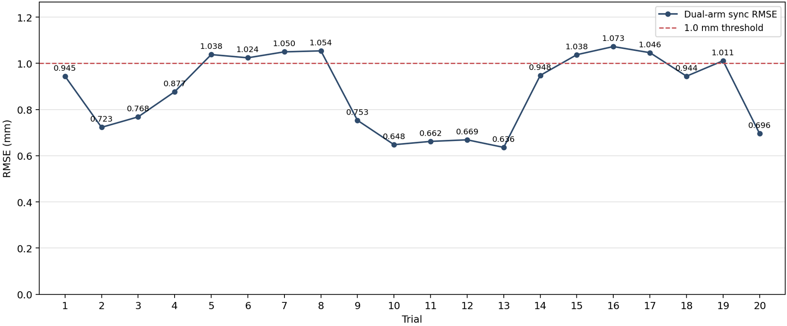
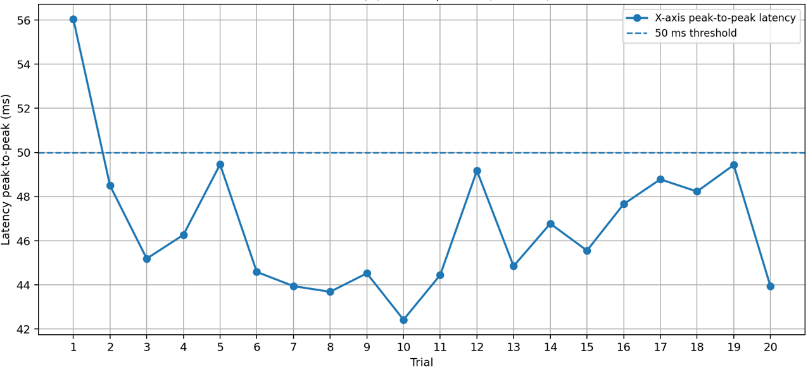
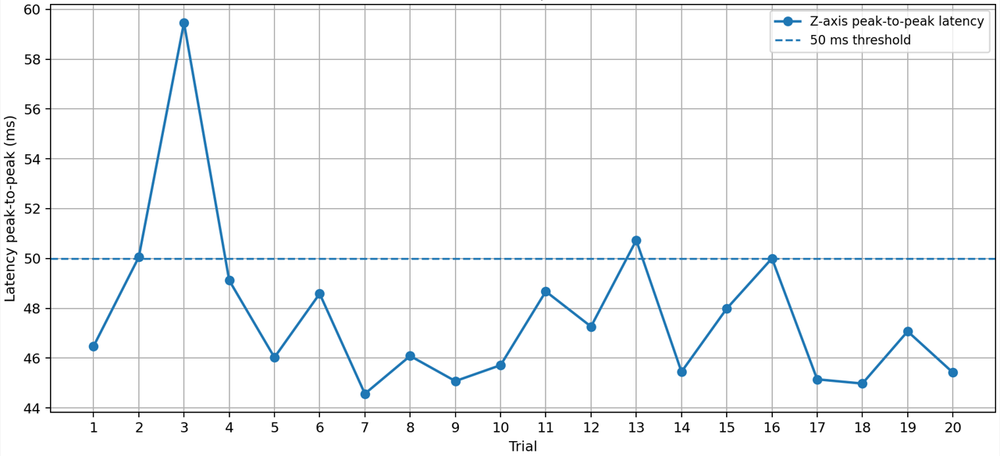
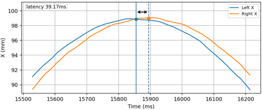
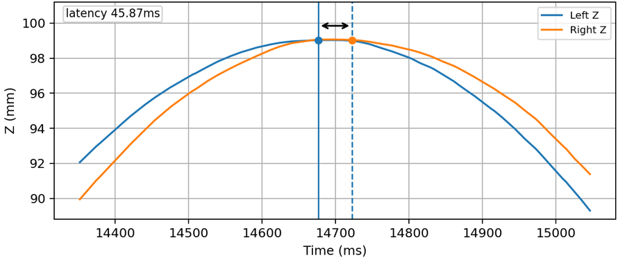
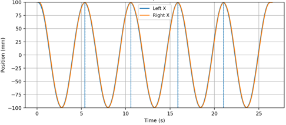
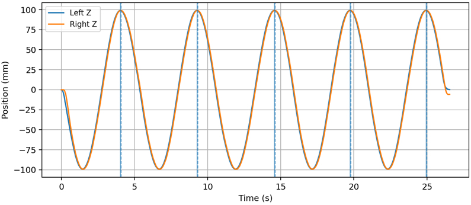
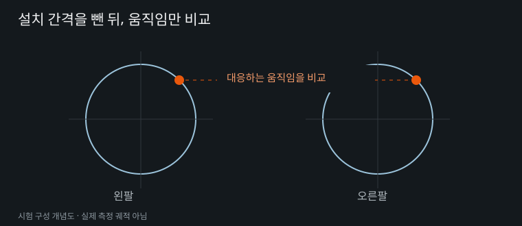
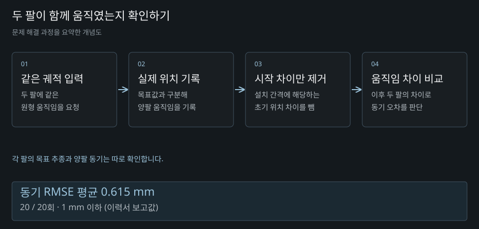

BEFORE
궤적을 잘 포개는 비교
회전·이동 정합에 따라 운동 차이도 줄어들 수 있음
03 / DUAL-ARM KPI
측정 코드 구현과 반복 시험을 맡아, 양팔 동기 오차와 추종 지연을 측정하고 KPI 달성을 확인했습니다.
Neuromeka 인턴 · 2025.12 ~ 2026.06
KPI TEST · RESULTS
0.615 mm측정 RMSE
KPI 달성MEAN 0.589 mm
46.675 ms측정 RMSE
KPI 달성MEAN 41.012 ms
47.694 ms측정 RMSE
KPI 달성MEAN 42.285 ms
KPI TEST · MEASUREMENT







자료: KPI 슬라이드 1·2 · 동기 시험 원본 ↗ · 지연 시험 원본 ↗
01 / Test Goal
양팔 로봇의 시험 환경을 구성하고, 두 팔이 같은 움직임을 유지하는지와 Master를 Slave가 얼마나 늦게 따라가는지를 평가했습니다. 화면에서 궤적이 비슷해 보여도 각 팔의 목표 추종, 두 팔 사이의 위치 차이, 시간 지연은 서로 다른 문제였습니다.
저는 결과값을 계산하기 전에 무엇을 비교해야 요구한 성능을 판단할 수 있는지부터 정리했습니다. 작은 오차를 만드는 계산보다, 실제 차이를 남기는 측정 기준이 필요했습니다.
02 / Decision
초기에는 한 팔을 반전하고 두 궤적을 회전·이동시켜 맞추는 방식을 검토했습니다. 하지만 정합 과정에서 평가하려는 운동 차이까지 작아질 수 있었습니다.
설치 간격에 해당하는 초기 위치 차이만 제거하고, 이후 두 팔의 상대변위 차이는 그대로 남기는 기준으로 정리했습니다.
각 팔이 제어기 목표를 잘 따라가는지와 두 팔이 같은 운동을 하는지는 따로 계산했습니다.
BEFORE
회전·이동 정합에 따라 운동 차이도 줄어들 수 있음
AFTER
두 팔이 출발한 뒤 서로 얼마나 다르게 움직였는지 확인

03 / Measurement
동기 시험은 공통 원궤적을 두 팔에 전달하고 실제 TCP 위치를 기록했습니다. 각 팔의 시작 위치를 뺀 뒤 두 움직임의 차이로 동기 오차를 계산했습니다. 한 팔의 actual과 controller desired 사이 오차는 별도로 확인했습니다.

Master–Slave 시험에서는 Master의 실제 움직임을 읽어 Slave 목표를 만드는 경로와 선행 보상을 다뤘습니다. 명령을 보낸 시각 차이가 실제 로봇의 추종 지연을 대신하지 않도록, 두 팔의 실제 위치 파형에서 대응하는 지점의 시각을 비교했습니다.
X·Z축에서 Master와 Slave의 실제 위치 파형을 확인했습니다.
같은 동작 구간을 확대해 두 곡선의 대응 peak 사이 시각 차를 비교했습니다.
X·Z축 지연의 RMSE와 MEAN을 각각 정리하고, 50 ms 기준과 비교했습니다.
04 / Results
보고서에서 동기 RMSE는 0.615 mm, 추종 지연 RMSE는 X축 46.675 ms · Z축 47.694 ms로 정리했습니다. 동기 오차와 시간 지연을 나누어 측정하고 각 KPI 기준의 달성을 확인했습니다.
KPI 결과 그래프 보기 ↑ · 실제 측정 그래프 보기 ↑
표시 수치는 KPI 슬라이드 1·2의 RMSE와 MEAN입니다. 그래프는 같은 PowerPoint 원본에 포함된 이미지를 사용했습니다.
05 / Takeaway